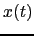
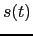
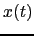
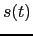
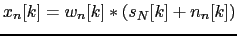
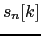
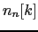
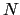
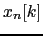

Next: Meeting Information Extraction Up: Multichannel Acoustic Beamforming System Previous: Multichannel Acoustic Beamforming System Contents
Prior to doing any multichannel beamforming each individual
channel is Wiener filtered (Wiener and Norbert, 1949). It aims at cleaning
the signal from corrupting noise, which is considered to be
additive and of a stochastic nature. The Wiener filter parameters
 are chosen so that the mean square error between the clean
signal  and the resulting output signal  is minimized.
Considering an additive noise
are chosen so that the mean square error between the clean
signal  and the resulting output signal  is minimized.
Considering an additive noise  it can be written as:
it can be written as:
|  | (5.6) |
where  and  are the discrete speech and noise recorded by each of the  channels in the room, and  is the cleaned signal which will be further processed by the system.
In this implementation Wiener filtering is applied to each channel independently, not taking advantage of the multichannel properties of the speech or noise being recorded as in Rombouts and M.Moonen (2003) and Doclo and Moonen (2002). Being that the microphones are located in unknown places in the room it is considered that no assumptions can be made on the noise or speech properties at this level. The Wiener filtering implementation is taken from ICSI-SRI-UW and used in the ASR system as explained in Mirghafori et al. (2004).
user 2008-12-08